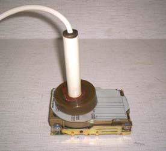
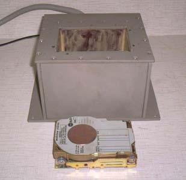

Полное гарантированное уничтожение данных на магнитных
носителях с помощью импульсного магнитного поля
Проблема утечки конфиденциальной информации
В компьютерах основные объемы данных хранятся на жестких магнитных дисках (винчестерах), так как они обладают рядом преимуществ перед другими носителями информации: энергонезависимость, большая емкость, дешевизна, надежность, достаточно быстрый доступ. В частности, на винчестерах может храниться конфиденциальная информация, утечка которой будет иметь тяжелые последствия для пользователя. Одним из каналов утечки может быть попадание жестких дисков в руки посторонних лиц, например, при гарантийном обслуживании, ремонте, продаже или утилизации. Стирание информации обычными средствами и даже переформатированием жесткого диска не приводит к ее полному уничтожению (а если жесткий диск вышел из строя, то доступ к нему пользователя вообще невозможен). Информация с такого диска может быть восстановлена с помощью специального программного обеспечения или на аппаратном уровне (в том числе с поврежденного винчестера). Таким образом, полное гарантированное уничтожение информации на жестком магнитном диске, кажущееся пользователю внешне несложным, является достаточно серьезной задачей. Вышесказанное относится и к другим магнитным носителям информации: различным типам дискет, аудио-, видео-, и стриммерным кассетам.
Способ полного уничтожения информации на магнитных носителях
Запись информации на магнитный носитель производится с помощью магнитной головки. Она создает магнитное поле, достаточное для локального перемагничивания магнитного слоя, нанесенного на диск носителя. Поэтому для полного уничтожения записей на магнитных носителях возможно использование внешнего магнитного поля, величина напряженности которого обеспечивает полное перемагничивание или размагничивание магнитного слоя носителя. Внешнее магнитное поле может быть постоянным или импульсным. Затраты на получение импульсного магнитного поля необходимой напряженности гораздо ниже, кроме того, существенно уменьшается время уничтожения данных на одном носителе.
Недостатком предлагаемого способа для случая жесткого магнитного диска является безвозвратная потеря его работоспособности, так как при этом стирается служебная информация низкоуровнего форматирования и сервометки. Однако, в случаях, когда цена утечки информации на несколько порядков превышает стоимость носителя, подобный метод уничтожения информации является вполне приемлемым. Кроме того, он может быть применен к отслужившим или вышедшим из строя магнитным носителям, подвергаемым утилизации.
Возможная реализация
Для полного уничтожения информации на жестком магнитном диске (или другом магнитном носителе) с помощью импульсного магнитного поля может быть использован соленоид (рис. 1) или намагничивающее устройство [4] (рис. 2), питание которых осуществляется от импульсных генераторов [1 - 3].

Рис. 1. Полное перемагничивание винчестера с помощью импульсного соленоида.

Рис. 2. Полное перемагничивание или размагничивание винчестера с помощью импульсного намагничивающего устройства [4]. Винчестер необходимо разместить в зоне намагничивания внутри устройства.
Оба типа устройств создают импульсное магнитное поле с амплитудой напряженности до 700 ... 800 кА/м (индукция ~1 Тл) в зоне магнитного покрытия и обеспечивают полное перемагничивание или размагничивание магнитного слоя и уничтожение записанной на нем информации. Необходимо помнить, что при этом жесткий магнитный диск безвозвратно утрачивает работоспособность.
В соответствии с вышеприведенным принципом могут быть разработаны и изготовлены практические конструкции устройств для полного гарантированного уничтожения данных на магнитных носителях.
Ссылки:
07.07.2006
01.07.2010
Альтернативные источники
энергии
Компьютеры и Интернет
Магнитные поля
Механотронные системы
Перспективные
разработки
Электроника и
технология